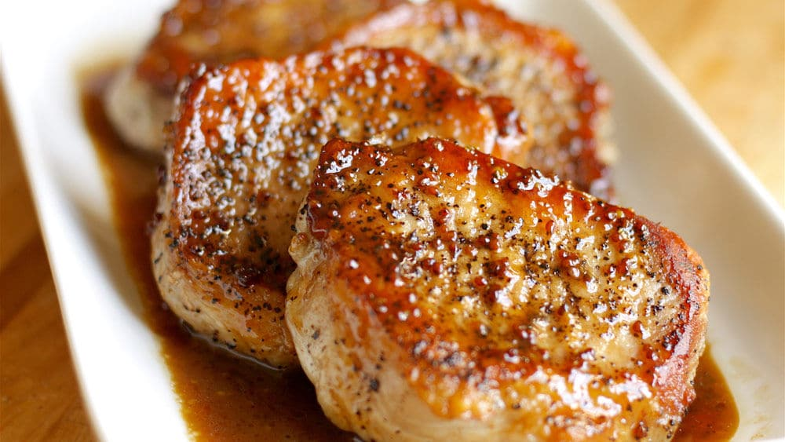

Porkchops

Description
These juicy porkchops will be simple to make and delicious to eat.
Ingredients
- 2 "America's Cut" porkchops
- 1 TBSP olive oil
- 1 tsp. of garlic powder
- 1 tsp. of kosher salt
- 1 tsp. of oregano
- 1 tsp. of paprika
Steps
- Take out porkchops out of refrigerator for 15min at room temperature.
- Mix garlic powder, kosher salt, oregano, and paprika in a small bowl.
- Heat cast iron skillet to medium high and add 1 TBSP of olive oil.
- Dab porkchops with paper towels to ensure that they are dry.
- Apply seasonings to both sides of porkchops.
- Place porkchops onto skillet and cook 5 minutes on each side.
- Let cool for 5 minutes.